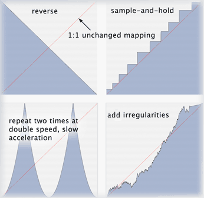

The Time Warp filter maps 'input' time to 'output' time using table-lookup. The vector editor shows output time on the X-axis and input-time on the Y-axis. The image below illustrates some common examples:

The red dotted line from the bottom left to the top right indicates the 1:1 unchanged mapping. Note that the total duration of the timeline selection cannot be changed at the moment. If you want to stretch a section say by a factor of 3, insert an empty time span twice as long as the section right after that section. Select the section plus the newly inserted empty span. In the Time Warp dialog, Right+Click or Ctrl+Click on the vector editor, choose 'Apply Function', choose a 'Rising Sawtooth' of amplitude 0.3333, 1.0 periods, 0 degree phase and unipolarity (uncheck 'Bipolar'). Choose 'Replace Values' as the application mode and hit 'Ok. Voilà.
The vectors can be modified by drawing directly with the mouse (select the pencil tool first) or by invoking one of the context menus (Right-Click or Ctrl+Click):